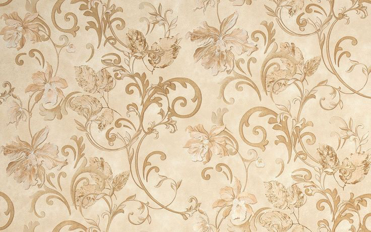
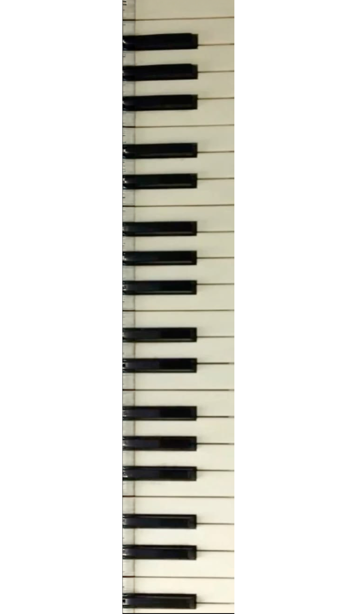
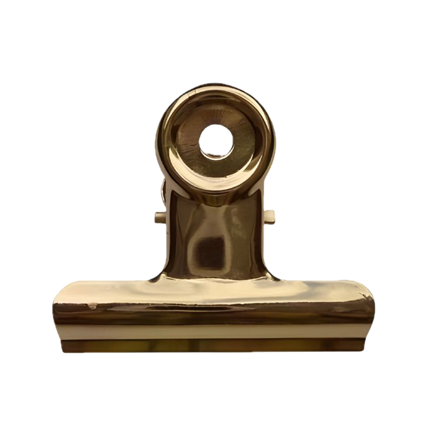
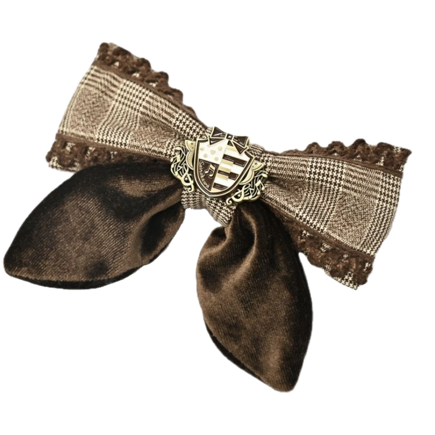
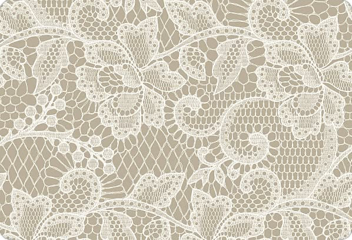
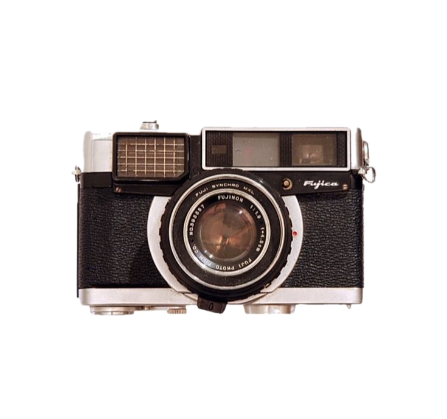
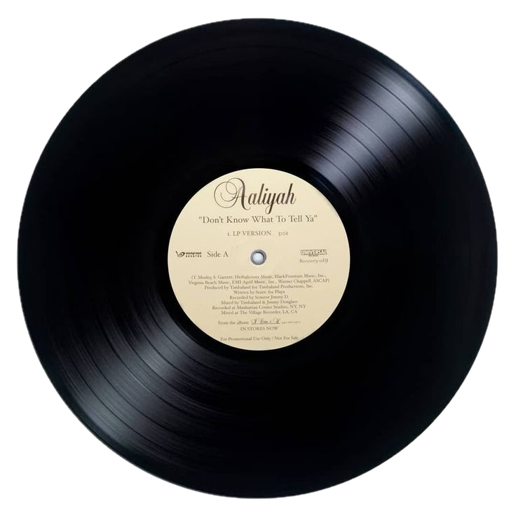
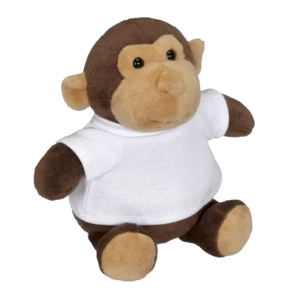

Hi hi! My name is Hiba and I made this website to express myself and show off music related topics that I can, and will yap about 24/7. I love varies of genres and artists that really hold my heart. I hope especially the music lovers enjoy my page but of course everyone else is welcome!!


